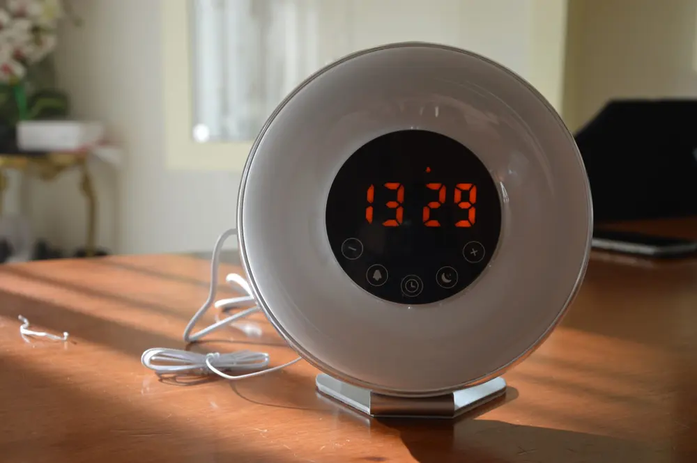
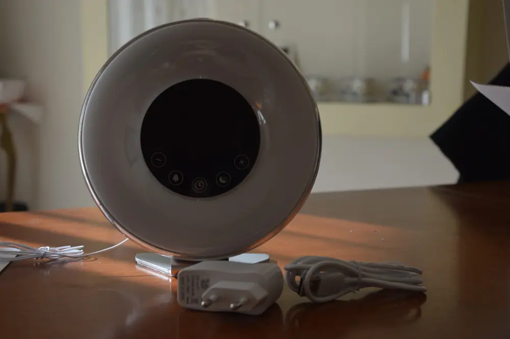
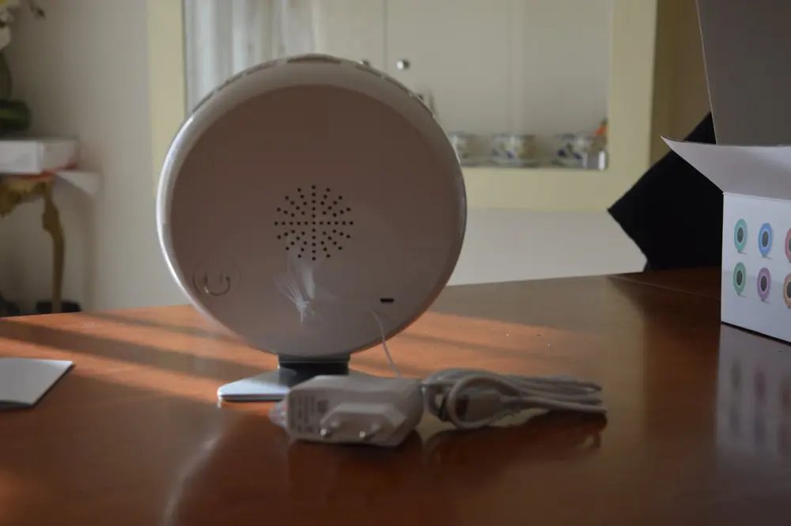
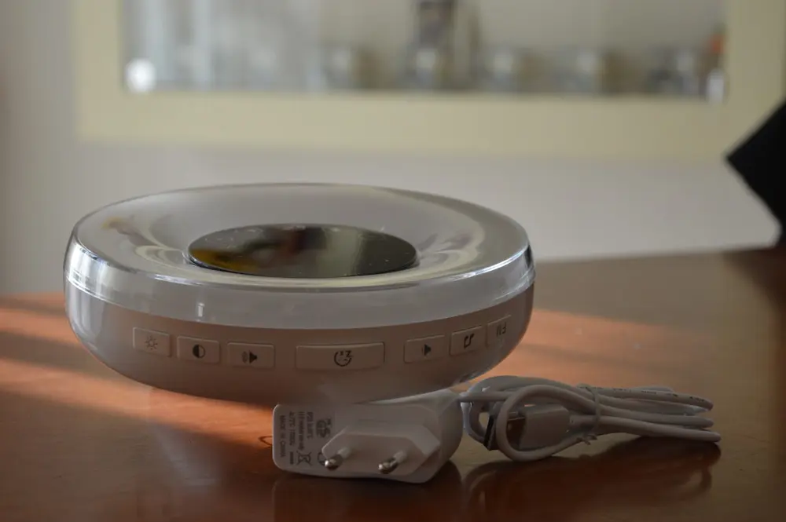
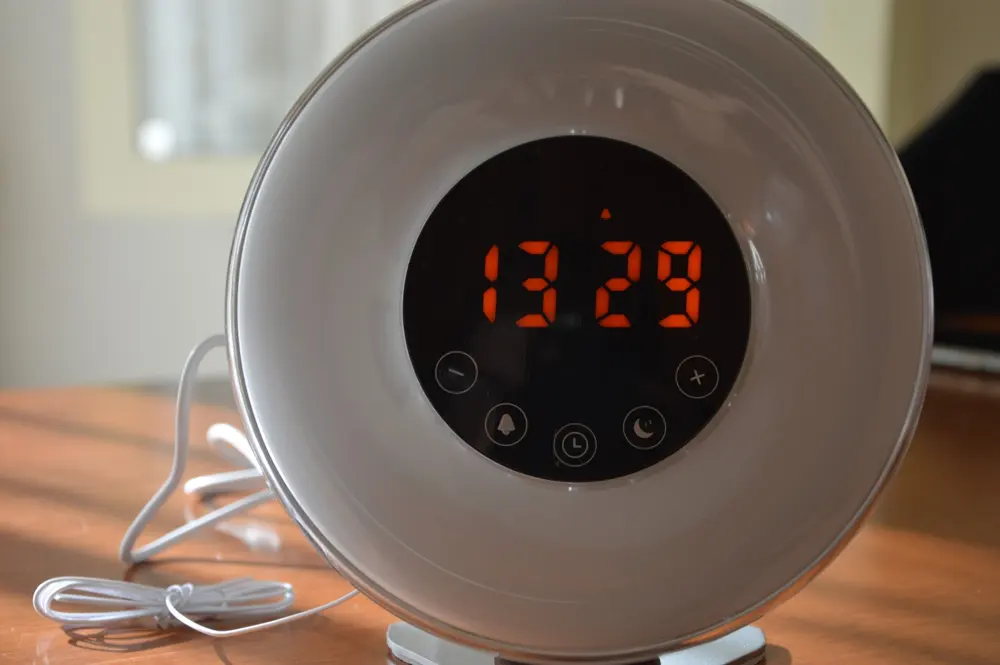

Sveglia elettronica
È da un pò che sto provando e sto testando questa sveglia.
Voi direte che c'è da testare in una sveglia?

Devo vedere se riesce a svegliare :D
Ok, già vi dico che ha un volume basso.

Ma voglio parlarvi più approfonditamente di ogni suo dettaglio.
Dunque, il suo aspetto è molto moderno e adatto un pò ad ogni tipo di arredamento.

La cosa che colpisce in primis sono i colori, sì, perché ci sono varie tonalità tra cui scegliere.
C'è un contro però, non ha tutte le tonalità che riporta sulla scatola, ha qualcuna in meno ma comunque è una cosa irrilevante.

Ha diversi suoni molto soft, adatti per chi ha voglia di svegliarsi in modo lento e dolce. Infatti potremo scegliere tra il cinguettio degli uccelli oppure il rumore delle onde del mare.
Ovviamente ha anche altri suoni, potete ascoltarli nel video.

Ma è anche possibile svegliarsi con la radio, infatti questa sveglia è dotata di radio, magari mettendo in automatico che oltre alla radio si accende anche la luce.
Beh, molto bella dai!
Sul davanti della sveglia è tutto touch screen, poi sopra o indietro ha tasti dove poter regolare il volume, accendere e spegnere.
È dotato di un piedistallo in metallo antiscivolo per metterla sul comodino. Di un cavo di alimentazione. Libretto di istruzioni (ma è solo in inglese e cinese).
È possibile utilizzare la sveglia con cavo appunto ma anche con le pile.
Prezzo:26,99€
Io in realtà non la consiglio molto per il semplice fatto che ha un volume basso. Per il resto è molto bella, soprattutto il fatto che ha quest'orologio a tutto schermo. Ma se volete acquistarla per il volume non è indicatissima.
Per acquistare la sveglia CLICCA QUI.